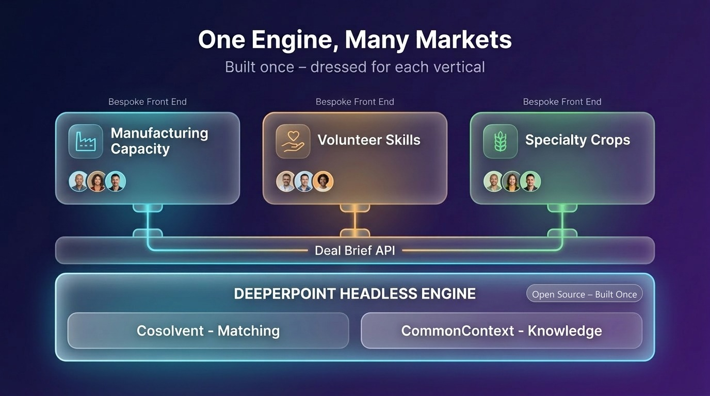
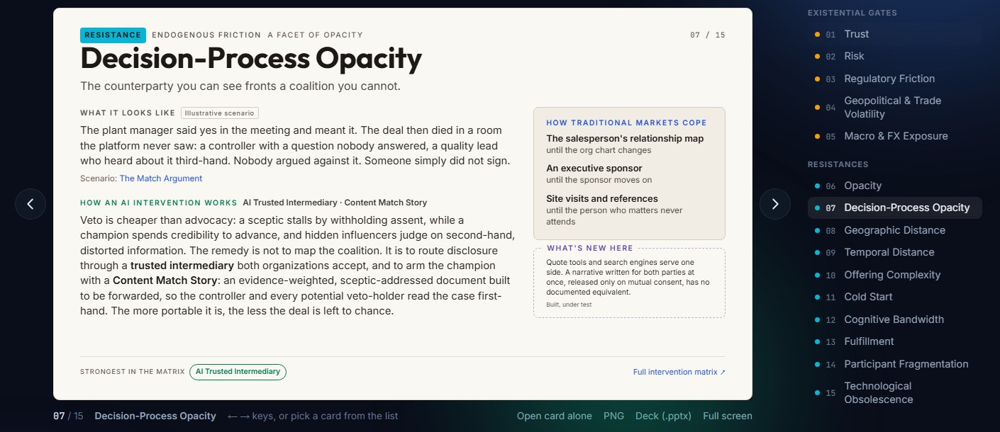

DeeperPoint applies the seven AI interventions in a generic, open-source marketplace engine — not tied to any vertical. A market sponsor adopts it, adds their market’s business logic, and skips a decade of rediscovering the same problems.

The DeeperPoint thesis: because the frictions that keep markets thin are common across thousands of markets, the friction-fighting layer can be built once and open-sourced. A sponsor reuses it and adds only their market’s business logic — instead of rediscovering the same problems alone.
DeeperPoint offers the solution as three peer components — Cosolvent (the matching engine), CommonContext (the curated knowledge layer) and ClientSynth (synthetic populations for testing) — as free, headless server functionality: Cosolvent and CommonContext under MIT, ClientSynth under Apache 2.0 with one condition. It is deliberately not a shrink-wrap product for any market vertical, and probably can't become one: everything vertical-specific is exactly what the adopter must own.
Getting a new market engine studied and adopted faces the very frictions this site catalogues, so the license was engineered like everything else here. Trust: the code is inspectable, and fork rights are exit rights — no vendor can raise the price after you have built on it. Opacity: there is no “contact us for pricing,” no sales process concealing the real terms. The hidden veto: inside an organization, spending money is what triggers procurement, legal, and budget review — a $0 MIT tool turns a purchase decision into an engineering experiment a single champion can run. Cold start: trying it costs nothing.
To be precise about the boundaries: the engine is free; your vertical build and your operations are yours to fund. ClientSynth’s one condition is that synthetic participants stay marked as synthetic, are never presented as real, and never enter a market that serves real ones. And because Cosolvent’s ingest schema is open, you can generate synthetic populations with any tool — ClientSynth is a convenience, not a dependency.
Headless semantic matching engine — multi-attribute similarity, privacy-aware profiles, match-story generation.
Curated vertical knowledge: regulations, certifications, rates — the context that grounds matches in reality.
Synthetic market populations for testing, demonstration and the cold start, before real users arrive. Apache 2.0 with one condition: synthetic stays marked as synthetic, and never meets real.
The step-by-step path a sponsor follows to stand up a vertical on the engine. Creation Guide PDF available.
One card per reason a market stays thin, what the engine does about it, and how traditional markets have always coped.

The system runs the interventions as one continuous flow, from raw inputs to a deal that is ready to hand off:
Most marketplace platforms aim to close deals. DeeperPoint aims to get deals ready to close. The platform’s primary output is the Deal Brief — a structured, non-binding summary of everything two parties have explored and agreed. It captures who the parties are, what they propose to exchange, what remains open, and which professional intermediaries need to act next. It is the final milestone of the Content Match Story — the same document the parties have been reading and refining since the day they matched.
The Deal Brief is not a contract and is never intended to become one. It is the compilation of deal notes that all parties hand to their attorneys, bankers, insurers, and freight carriers — to speed the production of the real, authoritative agreement documents.
That is where DeeperPoint's deal-making function is complete. The Deal Brief is as far as friction reduction can go while staying generic — the last step common to every market. Everything after it — contracts, payments, fulfillment, analytics, advertising, fee-for-service — lies within each adopting sponsor’s span of control and beyond DeeperPoint’s purview.
The owner of a market vertical adopts the DeeperPoint suite and builds a market-specific front end on top of it: branding, participant UX, legal templates, payment rails, sponsorship services. With modern AI coding tools — Claude Code goes a long way — an adopter can produce a working digital twin of their market, and perhaps even a modest working marketplace site, in a fraction of the traditional effort.